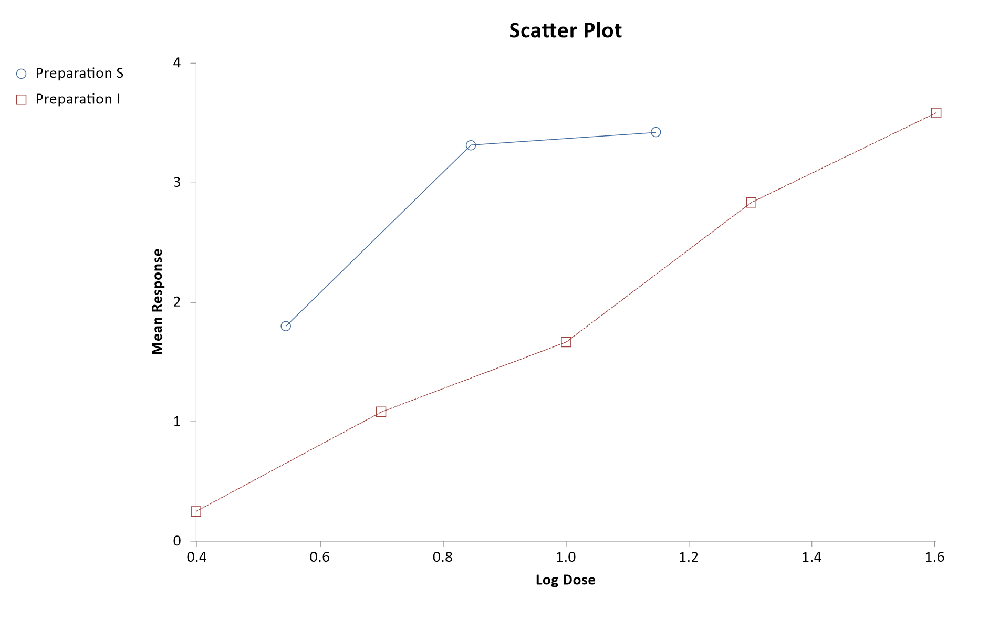

Menu location: Graphics_Scatter.
This function plots a single Y axis (ordinate) variable or series against an X axis (abscissa) variable or series. The scale selection for the axes is automatic. Each series is plotted using different marker style and you can opt to display joining lines between the markers.

There is an scatter plot (text-based) for single Y vs. X character based plots.